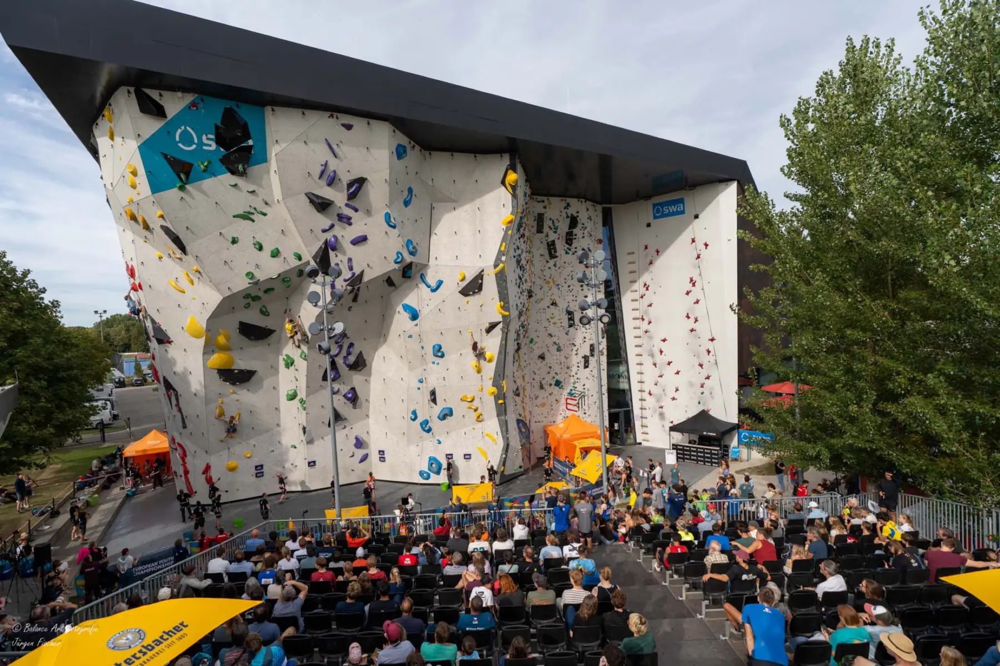
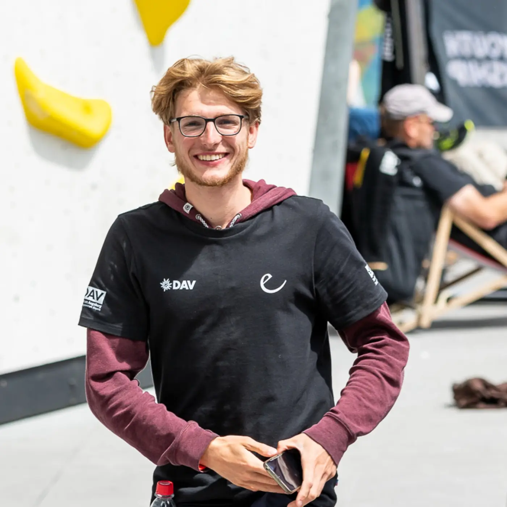
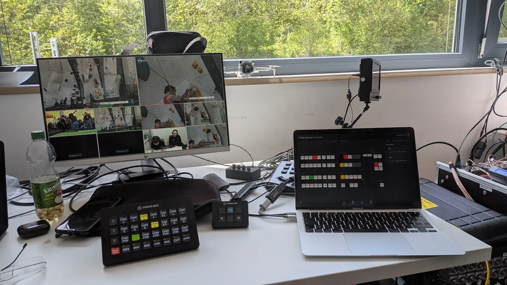
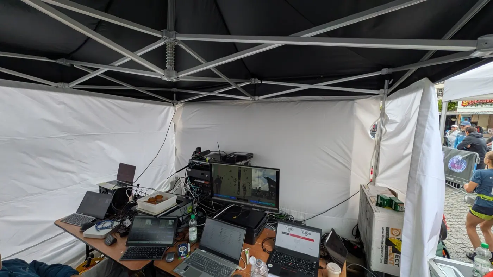
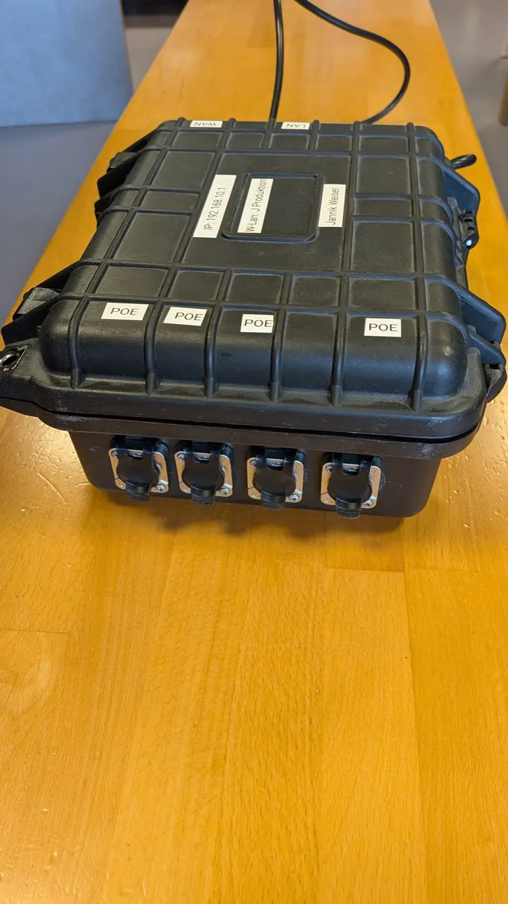

Tools for competitions.
Web apps for officials and organisers of climbing competitions.
Software
Apps for competition day
Helps you keep track of every starter at all times.
- results.infolive data straight from Vertical-Life results.info
- Different modessingle round, a sequence of rounds, speed training or a shared session across several tablets
- Easy to useon iPad, laptop or a big screen, right in the browser
An extension for the ItsBlue boulder clock, so you can run two clocks in parallel.
- 2 timersside by side for several routes
- 1 controlrun from a single browser
- Unlimited displaysconnect as many displays as you need or use the browser
Your helper for stressful moments. Always stay on top of things.
- Leadrecovery time, earliest restart and countdown
- Boulderingisolation, gaps and start times at a glance
- Offlineworks as a web app without an internet connection

From the field
I’m Jannik, working as a judge and technician at more than 20 climbing competitions a year. These tools are built wherever something is missing in the workflow, and tested at real competitions.
Competition tech
Hardware & training
I bring the tech for your competition, from the VAR system to the network to the livestream. I advise you on hardware, software and how your event runs, and I train your team. And if you’re short of people, I’ll put you in touch with experienced competition staff.
Tell me what you’re planning.
info@comptools.cloud


Contact
Questions or feedback on the tools?
Want to use a tool at your competition, found a bug or have an idea? Drop me a line.
info@comptools.cloud